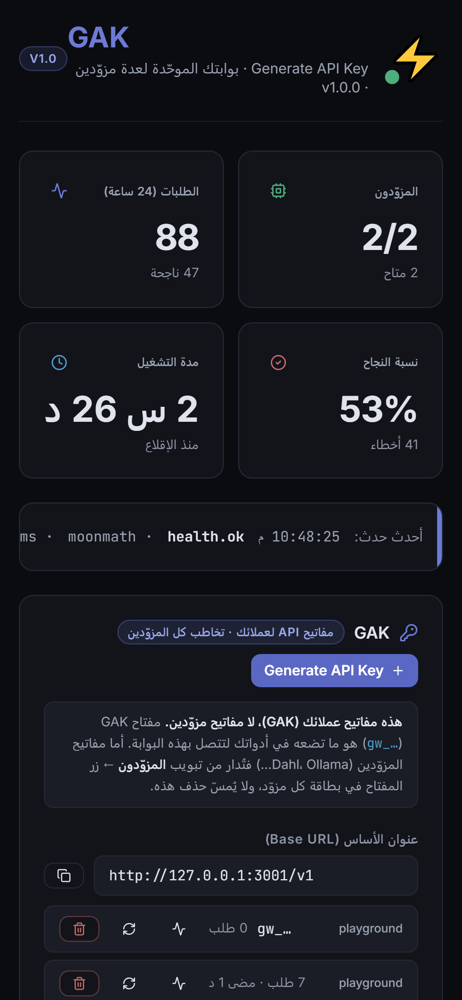

مفاتيح مبعثرة
كل أداة تحمل مفتاحاً خاصاً. تدوير مفتاح واحد يعني تعديل عشرة ملفات إعداد، ونسيان واحد يعني عطلاً صامتاً.
بوابة واحدة تجمع مزوّديك خلف عنوان متوافق مع OpenAI وAnthropic. تدوير المفاتيح، وفحص النماذج، والتبديل عند الفشل — تلقائياً، وعلى جهازك.
{ "model": "auto", "stream": true }
429 يحجز المفتاح وحده — الطلب يكمل على المفتاح التالي، بلا فشل ظاهر.
01المشكلة
كل مزوّد جديد يعني مفتاحاً جديداً، وحصة جديدة، وسطراً جديداً في كل أداة. وحين تنتهي الحصة أو يسقط المزوّد، يتوقف عملك — لا لأن النموذج توقف، بل لأن التوجيه لم يكن جاهزاً.
كل أداة تحمل مفتاحاً خاصاً. تدوير مفتاح واحد يعني تعديل عشرة ملفات إعداد، ونسيان واحد يعني عطلاً صامتاً.
الحد المجاني ينفد، فيُحجب المفتاح — وتبقى أنت تنتظر عودة الحصة أو تصلح الأمر يدوياً.
خطأ 502 في منتصف مهمة، وسجل لا يقول أي مفتاح فشل، ولا أي نموذج، ولا إلى أين ذهب الطلب.
02المزايا
كل ميزة هنا مبنية على سلوك يمكنك اختباره: أوقف مفتاحاً، أنهِ حصة، أو أضف نموذجاً ميتاً — وراقب ما يحدث.
نقطة نهاية متوافقة مع OpenAI وأخرى مع Anthropic، وثالثة للتضمينات. أي أداة تعمل بتغيير base_url فقط — دون تعديل كود.
الصق عشرة مفاتيح لمصدر واحد. كل مفتاح صفٌّ مستقل بحصته وحالته — عشرة أضعاف الحصة، بلا تدخل يدوي.
مفتاح ← مزوّد. لا تُعلن البوابة الفشل قبل استنفاد كل المفاتيح، ثم كل المزوّدين المؤهّلين بترتيب الأولوية.
نداء محادثة فعلي لكل نموذج، وست حالات دقيقة. المرفوض يُحجب عن التوجيه 24 ساعة ثم يُعاد فحصه تلقائياً.
ذاكرة ردود، وقصّ لمخرجات الأدوات، ونافذة سياق، وسقف max_tokens — كلها إعدادات تُحفظ في القاعدة.
صحة المزوّدين، نسبة النجاح، آخر حدث، والاستهلاك — مباشرة. السؤال الوحيد الساعة الثالثة صباحاً: أي مفتاح ميت؟
مزامنة المفاتيح من Vault أو Doppler أو 1Password، تدوير، قواطع دائرة، وسجل تدقيق. لا حذف تلقائي، والمفتاح اليدوي لا يُمَس.
03كيف يعمل
لا حساب، لا بطاقة، لا خدمة سحابية. تستطيع تجربته بمزوّد بلا مفتاح، ثم تضيف مفاتيحك متى شئت.
الصق مفتاحاً أو عشرة. البوابة تكتشف المزوّد من بادئة المفتاح، وتتحقق قبل الكتابة — مع معاينة كاملة.
مفتاح gw_… يُعرض مرة واحدة ويُخزَّن كبصمة SHA-256. هو كل ما تحتاجه أدواتك.
غيّر العنوان إلى localhost:3001/v1. الباقي كما هو — الاختيار والتدوير والتبديل يتولاه الموجّه.
04الاستخدام
نفس صيغة الطلب التي تعرفها. البوابة تختار المزوّد، تدوّر المفتاح، وتعيد البث كما هو.
curl http://localhost:3001/v1/chat/completions \
-H "Authorization: Bearer gw_your_key" \
-H "Content-Type: application/json" \
-d '{
"model": "auto",
"messages": [{ "role": "user", "content": "مرحباً" }],
"stream": true
}'from openai import OpenAI
client = OpenAI(
base_url="http://localhost:3001/v1",
api_key="gw_your_key",
)
stream = client.chat.completions.create(
model="auto",
messages=[{"role": "user", "content": "مرحباً"}],
stream=True,
)
for chunk in stream:
print(chunk.choices[0].delta.content or "", end="")from anthropic import Anthropic
client = Anthropic(
base_url="http://localhost:3001",
api_key="gw_your_key",
)
message = client.messages.create(
model="auto",
max_tokens=512,
messages=[{"role": "user", "content": "مرحباً"}],
)
print(message.content[0].text)# وجّه Claude Code إلى البوابة
export ANTHROPIC_BASE_URL=http://localhost:3001
export ANTHROPIC_AUTH_TOKEN=gw_your_key
claudegw_your_key يُنشأ من شريط GAK في اللوحة ويُعرض مرة واحدة. المفتاح نفسه يصل إلى كل المزوّدين المفعّلين.
05اللوحة
واجهة عربية بالكامل، مبنية حول القرار لا حول البيانات. كل بطاقة تقودك إلى الإجراء التالي.
لوحة واحدة: المزوّدون، مفاتيح GAK، آخر الأحداث، والاستهلاك — تتحدث مباشرة عبر WebSocket.
نفس اللوحة على الهاتف. RTL كاملة، بلا تطبيق منفصل، وبلا خطوط تُحمَّل من الخارج — افتحها من أي متصفح على شبكتك.

06الكتالوج
معاينة بضغطة تضيف المزوّد إلى providers.yaml. الترتيب أولوية لا سعر: الأقل يُجرَّب أولاً.
لا مزوّد يطابق هذا البحث. جرّب اسماً آخر أو أعد التصفية.
07الأمان
المفاتيح لا تُكتب في ملفات نصية، ولا تُرسل إلى خدمة وسيطة. كل شيء في قاعدة واحدة على جهازك — ومقفل بما يكفي.
تُخزَّن في data/gateway.db مشفّرة بمفتاح محلي data/.credkey. النسخة الاحتياطية تحتاج الاثنين معاً.
مفاتيح gw_… تُخزَّن كبصمة SHA-256 وتُعرض مرة واحدة. تسريب نسخة القاعدة لا يسرّب مفاتيح عملائك.
ADMIN_TOKEN يُبادَل بكوكي HttpOnly غير مقروء من JavaScript. لا توكن في localStorage ولا في الرابط بعد المصادقة.
حارس SSRF يحلّ الأسماء قبل الاتصال، وCSP مُلزِمة، وحدود معدّل لكل مسار. الاستماع محلي افتراضياً، و0.0.0.0 يرفض الإقلاع بلا توكن.
لا قياس عن بعد، ولا تسجيل دخول سحابي، ولا اتصال بأي خدمة غير المزوّدين الذين اخترتهم.
08التشغيل
لا Docker، ولا قاعدة بيانات خارجية، ولا متغيرات بيئة إلزامية. Node ≥ 20 فقط.
المستودع عام ومرخّص MIT. git clone ثم cd.
لا اعتماد على خدمات خارجية وقت التثبيت سوى npm نفسه.
يقدّم الواجهة والـ API وWebSocket من منفذ واحد: 3001.
من تبويب المزوّدين، أو ابدأ بمزوّد بلا مفتاح مثل Pollinations.
npm run dev يشغّل Vite على 5173 والخادم على 3001.
09الأسئلة
data/gateway.db مشفّرة، لا في .env. ملف .env لإعدادات البيئة فقط. أي نسخة احتياطية يجب أن تضمّ القاعدة ومفتاح data/.credkey./v1/messages يخدم Claude Code وAnthropic SDK، و/v1/chat/completions يخدم أي عميل متوافق مع OpenAI — Cursor وCline وContinue وغيرها.HOST=0.0.0.0 مع ADMIN_TOKEN إلزامي — وإلا يرفض الخادم الإقلاع. للوصول من خارج الشبكة أضف TLS وبروكسي عكسي.data/، واقرأ إخلاء المسؤولية في المستودع قبل توجيه حركة إنتاج حقيقية إليه.مفتوح المصدر، يعمل على جهازك، ويبدأ في دقيقة.